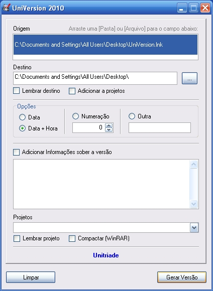

O UniVersion é um pequeno programa para o versionamento/backup de arquivos. Ele guarda uma copia de todo o sistema em um determinado momento, podendo ser utilizado para geração de backup diários de um arquivo ou pasta que contenha um sistema.
Esse programa é um Freeware, pode ser copiado e distribuído livremente.
1) Baixe a ultima versão disponível;
2) Descompactar o arquivo baixado para qualquer pasta que deseja;
3) Execute o arquivo INSTALAR.BAT, esse arquivo faz a copia dos arquivos para a pasta C:\WINDOWS\ 4) Responda SIM para a pergunta que aparecer, nesse momento são inseridos os valores no Registro do Windows para adicionar o UniVersion no menu de contexto do Windows Explorer;
5) Click com o botão direito do mouse sobre um arquivo ou pasta, e veja se aparece a opção UniVersion 2010;
Para utilizar, posicione o mouse sobre um arquivo ou pasta de sua escolha, click com o botão direito do mouse, e selecione a opção UniVersion 2010, escolha as opções de configução que deseja e selecione Gerar Versão, observe que por padrão o programa sempre indica a mesma pasta do arquivo de origem como destino.

| Data | Descrição | Versão | Kb | Download |
| 11/11/2010 | Correção de alguns erros, melhora significativa nas funcionalidades, opção de gravar destinos como projetos, gravar no destino já compactado(Utilizar o WinRAR), desinstalador em .bat | 1.10 | 411KB | UniVersion2010 1.10 |
| 04/11/2010 | Primeira versao estavel do programa | 1.3 | 403KB | UniVersion2010 |
Desenvolvido por Fernando Valler | fernandovaller@gmail.com
Unitriade.com